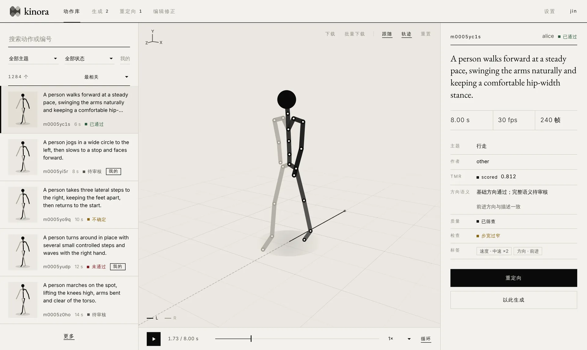
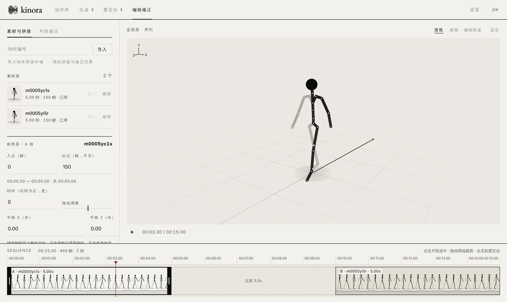
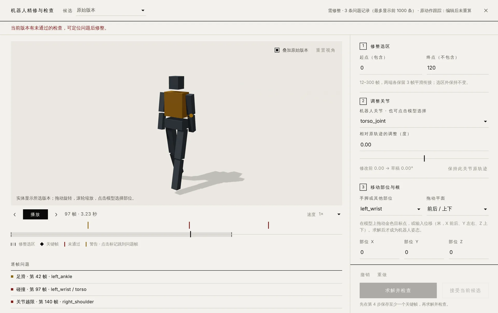

编辑修正
像剪辑视频一样处理动作
素材箱、监视器和时间线组成剪辑式布局。拖动裁剪入点出点，在俯视图里平移和旋转整段轨迹，检查两段之间的间距与转向。
- 两段拼接：只重新生成过渡段，两端素材帧保持不变
- 片段修正：在骨架缩略帧时间轴上划选 12–300 帧，描述修改
- 原动作始终保留，候选需对比后明确接受
动作生成 · 动作库 · 机器人重定向 · 精修 · Agent 工具
Kinora 把动作生成、检索、预览、重定向和精修放在同一个工作空间。桌面客户端连接团队服务器，生成、编辑与重定向由服务端计算，可用功能取决于所连接服务器的配置与账号权限；也可以通过 Gadget 的命令行与 MCP 工具，把动作工作流接入已有的 Agent。
macOSWindowsLinux自托管服务端CLI / MCP

动作库：描述与编号混合检索，三维骨架预览，审核与质量信息并排查看。界面示意 · 演示数据
用一句描述生成单人动作。服务器改写提示词，或直接提交英文原文；任务以卡片流展示排队与进度。
编号、关键词与跨语言语义在一个搜索框里。逐个预览骨架，查看人工审核、机器评分和质量提示。
在时间轴上选取片段描述修改，或把两段素材拼成一条，由生成模型补出自然的过渡。
选择目标机器人求解轨迹，用实体模型播放；在问题帧调整关节、部位与关键帧，再求解并检查。
下载 NPZ 或 BVH，批量打包附导出报告；或让 Agent 通过 Gadget 调用同样的能力。
编辑修正
素材箱、监视器和时间线组成剪辑式布局。拖动裁剪入点出点，在俯视图里平移和旋转整段轨迹，检查两段之间的间距与转向。

机器人精修
精修使用任务实际的机器人模型。时间轴标出碰撞、越限、足滑等逐帧问题；点击即可跳到对应帧，按步骤调整后提交求解。
自动检查不等于真机安全认证，请结合具体机器人、控制器与环境验证。

内置机器人重定向与实体网格预览；可导入 URDF、MuJoCo XML 或带资源的 ZIP，按账号隔离保存并查看关节限位。
NPZ 保留人体源数据，BVH 导出骨架动画。多选打包为 ZIP，内附逐项导出报告，失败项不会被静默略过。
密码与邮箱账号、管理员工具与 Gadget Key；服务端部署在自己的服务器上，数据与备份由团队自行掌握。
桌面端
客户端不附带账号、模型或本地 GPU 推理；能否生成、编辑和重定向，以所连接服务器的配置与权限为准。
安装与更新说明 →服务端
python3 -m venv .venv
.venv/bin/python -m pip install -r requirements.txt
.venv/bin/python scripts/seed_demo.py --root runtime/demo
bash commands/kinora-server.sh doctor --full本机演示只需 CPU，可先验证登录、动作库与预览。完整生成、编辑和精修需按部署指南安装资产、Kimodo 与授权模型，并通过 doctor --full 检查。
Agent
export MOTIONFARM_URL="https://your-kinora.example.com"
export MOTIONFARM_API_KEY_FILE="$HOME/.config/kinora/api-key.txt"
python3 motionfarm-gadget/motionfarm.py infoCLI 直接运行，或作为本地 MCP 子进程供 Codex / Cursor 调用。规划由你已有的 Agent 完成。
Gadget 入门 →| 下载 | 版本 | 适用环境 | |
|---|---|---|---|
| macOS | 0.5.1 | Apple 芯片与 Intel，Universal DMG | 下载 DMG |
| Windows | 0.5.1 | Windows 10 / 11，x86_64 安装程序 | 下载 EXE |
| Linux | 0.5.1 | Ubuntu 22.04+ / Debian 12+，x86_64 | 下载 DEB |
| 服务端源码 | 0.5.2 | 完整服务端、独立人体骨架与计算队列，含 Gadget 0.15.2；模型权重、GPU 环境与机器人资产需另行安装 | 下载 ZIP |
| Gadget | 0.15.2 | Python 3.10+，CLI / MCP | 下载 ZIP |
Kinora 自有代码以 Apache License 2.0 授权；第三方组件、模型与资产遵循各自许可，见 NOTICE。
打开 DMG，将 Kinora 拖入“应用程序”。首次可右键应用选择“打开”。
shasum -a 256 文件名.dmg
运行安装向导。未签名的安装包可能出现 SmartScreen，确认来源与校验值后再继续。
Get-FileHash .\文件名.exe -Algorithm SHA256
在下载目录用包管理器安装，依赖会自动解析。
sudo apt install ./文件名.deb
安装包尚未进行 macOS 公证和 Windows 代码签名。 请从本页或 GitHub Releases 下载，并用 SHA-256 核对；遇到完整性错误时不要关闭系统安全机制。已有用户可在客户端“设置 → 检查更新”中升级，应用内更新取决于所连接服务器的更新配置。